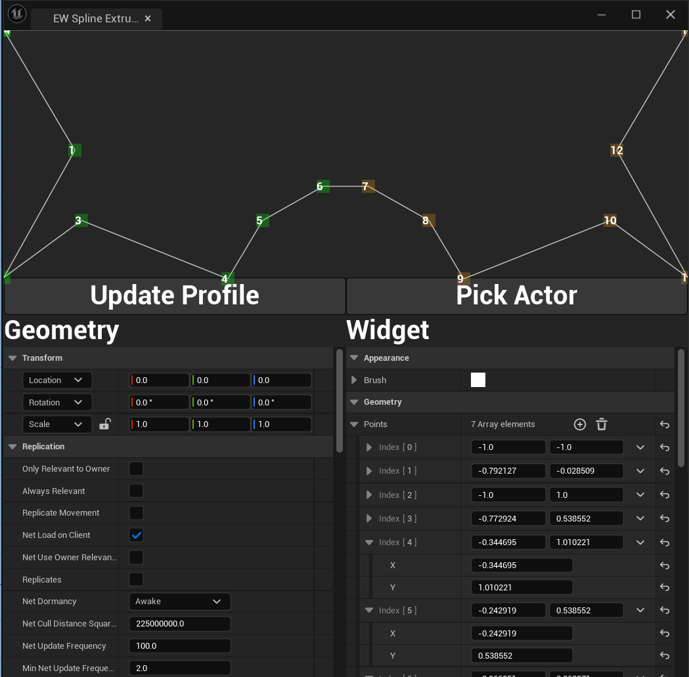

The Polyline editor I blogged about last time is a Slate Widget; the ultimate goal is to use it as a UMG control as it enables much faster implementation of useful Editor tools like this one 
Fortunaely this is an even more straightforward process than the creation of the Slate Control. It derives from UWidget and not UUserWidget. It turns out that UUserWidget is for Blueprint classes to derive from and if you derive from this in C++, the widget will NOT appear in the Widget palette; this behaviour is hardcoded into the engine and was the source of some inital confusion. So, here is the code to achive that!
// Copyright (C) John Connors 2023
//
// Permission is hereby granted, free of charge, to any person obtaining a copy of this software and associated documentation files(the “Software”), to deal in the Software without restriction, including without limitation the rights to use, copy, modify, merge, publish, distribute, sublicense, and / or sell copies of the Software, and to permit persons to whom the Software is furnished to do so, subject to the following conditions :
//
// The above copyright notice and this permission notice shall be included in all copies
// or substantial portions of the Software.
//
// THE SOFTWARE IS PROVIDED “AS IS”,
// WITHOUT WARRANTY OF ANY KIND, EXPRESS OR IMPLIED, INCLUDING BUT NOT LIMITED TO THE WARRANTIES OF MERCHANTABILITY, FITNESS FOR A PARTICULAR PURPOSE AND NONINFRINGEMENT.IN NO EVENT SHALL THE AUTHORS OR COPYRIGHT HOLDERS BE LIABLE FOR ANY CLAIM, DAMAGES OR OTHER LIABILITY, WHETHER IN AN ACTION OF CONTRACT, TORT OR OTHERWISE, ARISING FROM, OUT OF OR IN CONNECTION WITH THE SOFTWARE OR THE USE OR OTHER DEALINGS IN THE SOFTWARE.
#include "PolylineEditorWidget.h"
#define LOCTEXT_NAMESPACE "PolylineEditor"
UPolylineEditorWidget::UPolylineEditorWidget(const FObjectInitializer& ObjectInitializer)
: Super(ObjectInitializer)
{
XRange = 1.0f;
YRange = 1.0f;
LineThickness = 2.0f;
bClosedLine = false;
bMirror = false;
}
void UPolylineEditorWidget::ReleaseSlateResources(bool bReleaseChildren)
{
PolylineEditor.Reset();
}
TSharedRef UPolylineEditorWidget::RebuildWidget()
{
// clang-format: off
PolylineEditor = SNew(SPolylineEditor)
.Points(Points)
.Brush(&Brush)
.LineThickness(LineThickness)
.LineScale(FVector2f(XRange, YRange))
.bClosedLine(bClosedLine)
.bMirror(bMirror)
.OnPointAdded(BIND_UOBJECT_DELEGATE(FSimpleDelegate, HandlePointAdded))
.OnPointRemoved(BIND_UOBJECT_DELEGATE(FSimpleDelegate, HandlePointRemoved))
.OnPointMoved(BIND_UOBJECT_DELEGATE(FSimpleDelegate, HandlePointMoved));
// clang-format : on
return PolylineEditor.ToSharedRef();
}
void UPolylineEditorWidget::SynchronizeProperties()
{
PolylineEditor->SetBrush(&Brush);
PolylineEditor->SetLineThickness(LineThickness);
PolylineEditor->SetLineScale(FVector2f{ XRange, YRange });
PolylineEditor->SetPoints(Points);
PolylineEditor->SetClosedLine(bClosedLine);
PolylineEditor->SetMirrored(bMirror);
Super::SynchronizeProperties();
}
void UPolylineEditorWidget::HandlePointAdded()
{
Points = PolylineEditor->GetPoints();
PointsModified.Broadcast();
}
void UPolylineEditorWidget::HandlePointRemoved()
{
Points = PolylineEditor->GetPoints();
PointsModified.Broadcast();
}
void UPolylineEditorWidget::HandlePointMoved()
{
Points = PolylineEditor->GetPoints();
PointsModified.Broadcast();
}
void UPolylineEditorWidget::ComputeAllPoints(TArray& AllPoints)
{
constexpr bool bIncludeAllMirrorPoints = true;
return PolylineEditor->ComputeAllPoints(AllPoints, bIncludeAllMirrorPoints);
}
#if WITH_EDITOR
const FText UPolylineEditorWidget::GetPaletteCategory()
{
return LOCTEXT("Geometry", "Geometry");
}
#endif
#undef LOCTEXT_NAMESPACE
// Copyright (C) John Connors 2023
//
// Permission is hereby granted, free of charge, to any person obtaining a copy of this software and associated documentation files(the “Software”), to deal in the Software without restriction, including without limitation the rights to use, copy, modify, merge, publish, distribute, sublicense, and / or sell copies of the Software, and to permit persons to whom the Software is furnished to do so, subject to the following conditions :
//
// The above copyright notice and this permission notice shall be included in all copies
// or substantial portions of the Software.
//
// THE SOFTWARE IS PROVIDED “AS IS”,
// WITHOUT WARRANTY OF ANY KIND, EXPRESS OR IMPLIED, INCLUDING BUT NOT LIMITED TO THE WARRANTIES OF MERCHANTABILITY, FITNESS FOR A PARTICULAR PURPOSE AND NONINFRINGEMENT.IN NO EVENT SHALL THE AUTHORS OR COPYRIGHT HOLDERS BE LIABLE FOR ANY CLAIM, DAMAGES OR OTHER LIABILITY, WHETHER IN AN ACTION OF CONTRACT, TORT OR OTHERWISE, ARISING FROM, OUT OF OR IN CONNECTION WITH THE SOFTWARE OR THE USE OR OTHER DEALINGS IN THE SOFTWARE.
#pragma once
#include "CoreMinimal.h"
#include "Delegates/Delegate.h"
#include "Blueprint/UserWidget.h"
#include "SPolylineEditor.h"
#include "PolylineEditorWidget.generated.h"
DECLARE_DYNAMIC_MULTICAST_DELEGATE(FOnPointsModified);
/**
*
*/
UCLASS(BlueprintType)
class SANDBOXTOOLS_API UPolylineEditorWidget : public UWidget
{
GENERATED_BODY()
public:
UPolylineEditorWidget(const FObjectInitializer& ObjectInitializer);
virtual void ReleaseSlateResources(bool bReleaseChildren) override;
virtual const FText GetPaletteCategory() override;
virtual void SynchronizeProperties() override;
protected:
virtual TSharedRef RebuildWidget() override;
TSharedPtr PolylineEditor;
void HandlePointAdded();
void HandlePointRemoved();
void HandlePointMoved();
UPROPERTY(BlueprintAssignable)
FOnPointsModified PointsModified;
UFUNCTION(BlueprintCallable, Category = "Geometry")
void ComputeAllPoints(TArray& AllPoints);
public:
UPROPERTY(EditAnywhere, BlueprintReadWrite, Category = "Appearance")
FSlateBrush Brush;
UPROPERTY(EditAnywhere, BlueprintReadWrite, Category = "Geometry")
TArray Points;
UPROPERTY(EditAnywhere, BlueprintReadWrite, Category = "Geometry")
float LineThickness;
UPROPERTY(EditAnywhere, BlueprintReadWrite, Category = "Geometry")
float XRange;
UPROPERTY(EditAnywhere, BlueprintReadWrite, Category = "Geometry")
float YRange;
UPROPERTY(EditAnywhere, BlueprintReadWrite, Category = "Geometry")
bool bClosedLine;
UPROPERTY(EditAnywhere, BlueprintReadWrite, Category = "Geometry")
bool bMirror;
};
The properties of the Slate Control that we want to expose to the user are exposed as UProperties. These are passed to the Slate Control in it's constructor as SLATE_ARGUMENTS and the control is constructed in the RebuildWidget method that is overriden from UWidget
Other functions that have to be implemented are ReleaseSlateResources which destroys the Slate Control; SynchronizeProperties which sets the members of the slate control to the values of the UPROPERTIES of the widget, creating a communication conduit from UMG properties to the Slate control members.
One of the members of the widget is an array of points. In the control the points are deleted, modified and created by mouse clicks, so I implemented a sequence of functions in the widget HandlePointAdded, HandlePointRemoved. and HandlePointModified which call multicast delegates for the user of the control to potentially hook in to.
One last function to override is GetPaletteCategory to define what cateogry it appears in, in the UMG Widget palette; I created a new category Geometry because my code is so important, it deserves it's own cateogory like that!